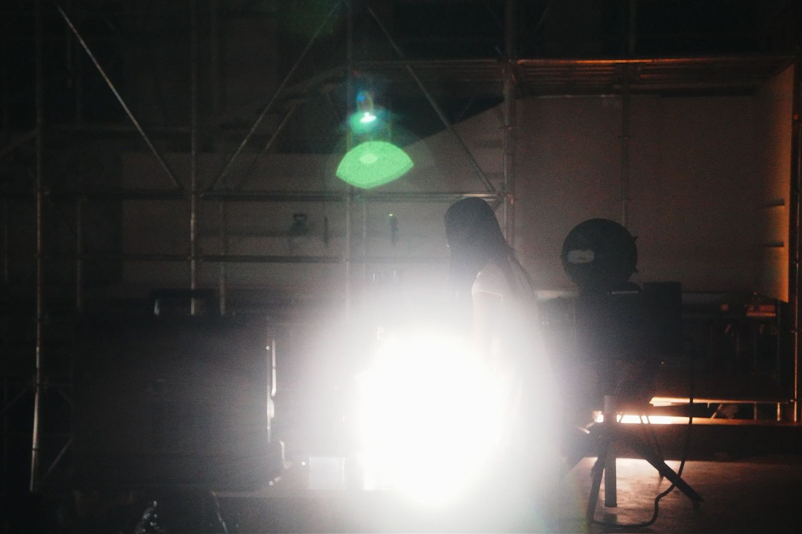
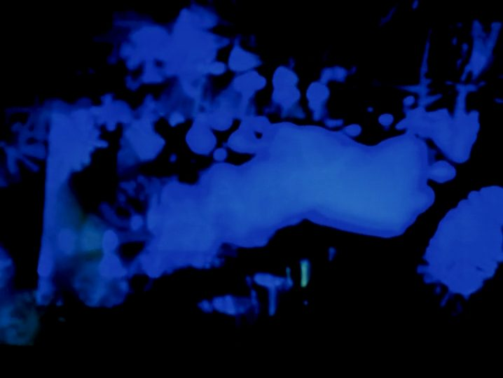
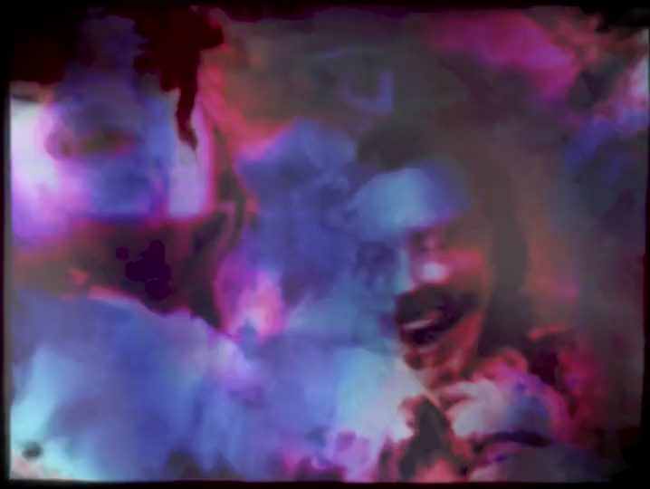
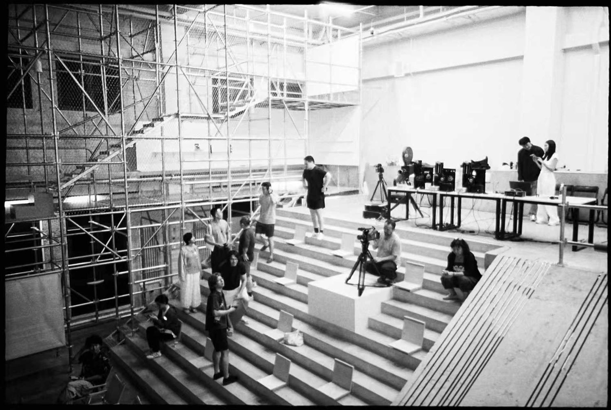

WORKS · LIVE
창 불 흐르는Melting Fire Iceman

불 타는 극장의 문이 닫힌 뒤 시작하는 영화. 불타는 극장은 떠나가는 관객을 뒤로 한 채 잠에 빠진다. 꿈의 내부에서 이미지는 물처럼 녹아 내리고 관객들은 그를 속박하고 있던 최면으로부터 풀려 나온다.
A film that begins after the doors of a burning theatre close. Left behind as the audience departs, the burning theatre falls into sleep. Inside the dream, images melt like water, and the audience is released from the hypnosis that held them.
《창 불 흐르는》은 영화가 지닌 최면적인 힘을 탐색하며, 엔딩 크레딧이 올라간 이후에도 우리의 기억과 인식을 형성하는 영화의 역할에 대해 질문을 던지는 확장 시네마 작품이다. 영사기는 단순한 기계를 넘어선 존재로 변모하고, 라이브 퍼포먼스를 통해 깜빡임과 간격이 실시간으로 조작되며 영화 장치는 자율성을 획득해 끊임없이 순환한다.
리버스 디퓨전 모델을 활용해 영화의 핵심 기억이 지닌 유동적이고 변화무쌍한 특성을 구현한다. 온라인 자료와 한국영상자료원에서 발굴된 초기 영화들은 AI를 통해 해체되고 다시 재구성되며 끝없는 재탄생의 사이클을 반복한다. 이 몽환적인 과정에서 기억, 관람자, 그리고 영화적 경험 사이의 경계는 새롭게 정의된다.
Melting Fire Iceman is an expanded cinema work that explores the hypnotic power of film and asks about cinema’s role in shaping memory and perception long after the credits roll. The projector turns into something more than a machine; through live performance the flickers and intervals are manipulated in real time, and the cinematic apparatus gains autonomy, looping and coming alive.
Using a reverse diffusion model, the work renders the fluid, shifting nature of cinema’s core memories. Early films drawn from online repositories and the Korean Film Archive are dissolved and reimagined by AI in an endless cycle of rebirth. In this dreamlike process the boundaries between memory, spectator and the cinematic experience are redrawn.
크레딧Credits
- Artist · PerformerHeeSue Kwon
- AI interpolationHyunoh Sung
- Live cameraYujian Wang
- Technical supportSumin Kim
상영 · 전시Screenings & exhibitions
- 35th Singapore International Film Festival, Undercurrent — 2024년 11월 · 인터내셔널 프리미어 · Undercurrent 섹션 최초의 확장 시네마 작품November 2024 · International Premiere · the first expanded cinema work in the Undercurrent section
- 《Avant-Garde Now: Wayfinding》, M+ — 2026 · 홍콩 · 상영과 퍼포먼스 프로그램2026 · Hong Kong · screening and performance programme
- 《Invisible Spectrum 2》, Ramp — 2026년 7월 4일–8월 1일 · 베이징 랑위안 · 개막 퍼포먼스4 July – 1 August 2026 · Langyuan, Beijing · opening performance



